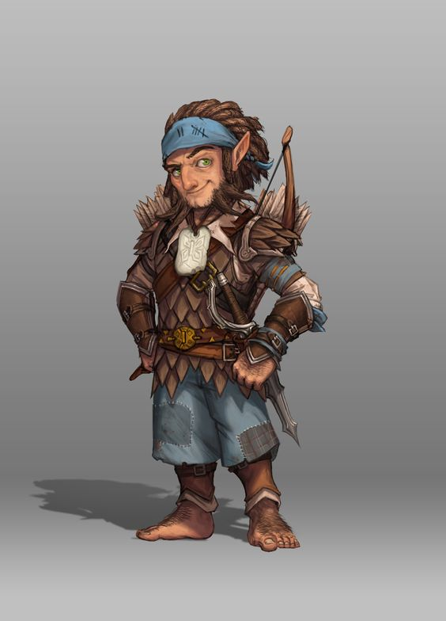

MAGRELO E DE CABELOS LISOS, SUA PELE TEM UM TOM marron-noz e seus olhos são de um cor turquesa surpreendente,
Burgell parece ter metade da
altura de Aeron e precisa subir em um caixote
para ver através do olho mágico. Como a maioria das residências em Oeble, aquela casa em particular
foi construída por humanos e os residentes pequenos lidam com isso sem se constranger da melhor forma
que podem. Mas, pelo menos a grandeza relativa do apartamento permitiu que Burgell tivesse espaço para
todas as suas bugigangas de tamanho gnomo. A sala principal era sua oficina e ela continha uma variedade inimaginável
de ferramentas: martelos, cinzeis, serras, fechaduras, lentes coloridas, lupas de joalheiro, jarros de pólvora e ingredientes
picados para conjurar magias. Um gato cinza e gordo, o familiar do arcano, permanece deitado sobre um grimório.
Ele abriu seus olhos, deu uma olhada de soslaio desdenhosa para Aeron e depois, aparentemente, voltou a dormir. –Richard Lee Byers, O Buquê Negro
Um zumbido constante de atividades permeia a vizinhança onde os gnomos formam suas comunidades privadas. Barulhos estrondosos pontuam o zumbido:
um tilintar de engrenagens moendo aqui, uma pequena explosão ali, um grito de surpresa ou comemoração e, principalmente, muitas gargalhadas.
Gnomos regozijam a vida, apreciando cada momento de invento, exploração, investigação, criação e brincadeira.
EXPRESSÕES VIBRANTES
A energia e entusiasmo dos gnomos pela vida brilha em cada pedacinho do seu pequeno corpo. Um gnomo padrão tem aproximadamente 90 centímetros de
altura e pesa entre 20 e 23 kg. Seus rostos morenos ou bronzeados são geralmente adornados com largos sorrisos (apesar dos seus prodigiosos narizes)
e seus olhos brilhantes vibram de emoção. Seus cabelos claros tendem a ser espichados, como se expressassem o insaciável interesse dos gnomos em
tudo a sua volta.
A personalidade de um gnomo é muito maior que sua aparência.
A barba de um gnomo macho, em contraste com seu cabelo bagunçado, mantem se perfeitamente aparada,
mas as vezes, tem um bigode estiloso e pontas curiosas. Apesar da roupa de um gnomo geralmente possuir tons modestos de terra,
ele ostenta bordados, estampas ou joias reluzentes.
DEDICAÇÃO INCRÍVEL
Até onde os gnomos tem conhecimento, estar vivo é uma coisa maravilhosa e eles espremem cada gota dos seus três a cinco séculos de vida
aproveitando ao máximo. Humanos devem se perguntar como deve ser entediante o curso de uma vida tão longa, e elfos levam muito tempo para
saborear as belezas do mundo em seus longos anos, mas gnomos parecem estar preocupados que, mesmo com tanto tempo, não seja suficiente para
fazer ou ver tudo que eles querem. Gnomos falam mais rápido que o pensamento em suas cabeças consegue se formar. Mesmo enquanto eles oferecem
uma vasta gama de ideias ou opções, eles ainda tendem a ouvir atentamente os outros, adicionando apropriadamente exclamações e surpresa e apreciação
ao longo da conversa. Apesar dos gnomos adorarem piadas de todos os tipos, principalmente trocadilhos e travessuras, eles são igualmente dedicados
a tarefas sérias que eles desempenhem. Muitos gnomos são engenheiros, alquimistas, engenhoqueiros e inventores habilidosos.
Eles não se importam em cometer erros e riem de si mesmos no processo de aperfeiçoamento do que fazem, sem medo de se arriscar
(as vezes imprudentemente) e sonhando alto.
TOCAS BRILHANTES
Os gnomos fazem suas casas em terras montanhosas de floresta. Eles vivem no subterrâneo, mas saem mais ao ar livre que os anões,
aproveitando a natureza viva do mundo na superfície sempre que podem. Suas casas são bem escondidas tanto por construções inteligentes
quanto por pequenas ilusões. Visitantes desejados são rapidamente levados para as tocas quentes e iluminadas. Os que não são bem-vindos
dificilmente encontrarão a toca à primeira vista. Os gnomos que se estabelecem em terras humanas normalmente são lapidários, engenheiros,
sábios ou engenhoqueiros. Algumas famílias humanas possuem um tutor gnomo, garantindo que seus pupilos apreciem uma mistura de aprendizado
sério e divertimento encantador. Um gnomo irá ensinar a várias gerações de uma única família humana ao curso de sua longa vida.
VENDO O MUNDO
Curiosos e impulsivos, gnomos tendem a se aventurar como um meio de ver o mundo ou pela paixão por explorar.
Como amantes de gemas e outros itens finos, alguns gnomos vão se aventurar como um meio rápido, apesar de perigoso,
de adquirir riqueza. Independente do motivo que os levou a se aventurar, gnomos que escolhem esse estilo de vida adquirem muito
mais satisfação do que se eles estivessem realizando qualquer outra atividade que eles teriam, as vezes para um enorme aborrecimento
para os seus companheiros de aventura.